Contents
Matt McFarland
E91, lab 5, question 1
close all; clear all;
Constants and In-Line Functions
Functions
Fa = @(x) ((x.^2) .* exp(-x)); Fb = @(x) (x.^(1/3));
Romberg_Next gets R_m,j from R_m,j-1(a) and R_m-1,j-1 (b)
NextRomberg = @(Ra, Rb, j) ( ( ((4.^j)*Ra) - Rb) / ((4.^j) - 1) );
Trapezoidal Rule, y_vals = f0 and f1, h = panel width
Trap = @(y1, y2, h) h*(y1 + y2)/2;
Composite Trapezoidal Rule, y_vals = f0, f1, f2, ... fn, h = panel width
C_Trap = @(y_vals, h) ...
h/2 * (y_vals(1) + 2*sum(y_vals(2:end-1)) + y_vals(end));
Constants
from = 0; % start for integration to = 1; % end for integration error = 1e-11; % error tolerance n_0 = 1; % panels (2^m where m is doublings) h_0 = (from - to) / n_0; % starting value for h max_size = 20; % maximum number of iterations for n
Data
romberg_a = zeros(max_size); % data for function a romberg_b = zeros(max_size); % data for function b trapezoidal_a = zeros(2*max_size,1); % data for composite integration a trap_dif_a = zeros(2*max_size,1); % difference data for composite a trapezoidal_b = zeros(2*max_size,1); % data for composite integration b trap_dif_b = zeros(2*max_size,1); % difference data for composite b
Plot the Functions
figure(1) x = linspace(0,1,1000); plot(x,Fa(x),'r', x,Fb(x),'b--') xlabel('x') ylabel('y') title('Equation A and B') legend('Fa','Fb', 'Location', 'northwest')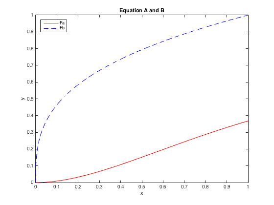
Calculate the Integrations
Start by calculating 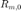 for m = 1, 2, 3 ... max_size
Where  is the number of halvings Where 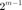 is the number of panels Where 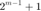 is the number of function evaluations
is the number of halvings Where 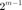 is the number of panels Where 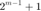 is the number of function evaluations
for m = 0:(max_size-1) % zero doublings to 2^(max_size - 1) panels n = 2^m; % number of panels h = (to - from) / n; % panel width x = linspace(from,to,n+1); % x points to evaluate f at ya = Fa(x); % calculate f(x) yb = Fb(x); % Below uses composite trapezoidal rule romberg_a(m+1,1) = C_Trap(ya, h); romberg_b(m+1,1) = C_Trap(yb, h); end;
Use Romberg Rule to Reduce Order of Error (Function A)
Continue until 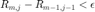
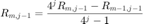
m = 1; % number of panel halvings (# row + 1) j = 1; % number of error reductions (# column + 1) differencea = zeros(max_size,1); differencea(1) = 1; % arbitrary, > 0 starting value while (differencea(m) > error && m < (max_size - 1)) % Fill out rows until tolerance or maximum iterations is reached row = m + 1; % account for 1 indexing in Matlab for k = 1:j % fill out columns in row column = k + 1; % account for 1 indexing ra = romberg_a(row, column-1); rb = romberg_a(row-1, column-1); romberg_a(row,column) = NextRomberg(ra, rb, k); end m = m + 1; % next row j = j + 1; % will need to go one column further differencea(row) = abs(romberg_a(row,column) - romberg_a(row-1,column-1)); end fprintf('Completed Romberg iteration (Function A)\n'); fprintf('Area = %f\n', romberg_a(row,column)); fprintf('Error Reduction Iterations (n) = %d\n',column-1); fprintf('Halvings = %d\n',row-1) fprintf('Function Evaluations = %d\n', 2^(row-1)+1) fprintf('Composite Trapezoidal Integral for this n is: %f\n', romberg_a(row,1));
Completed Romberg iteration (Function A) Area = 0.160603 Error Reduction Iterations (n) = 5 Halvings = 5 Function Evaluations = 33 Composite Trapezoidal Integral for this n is: 0.160633
Plot Error Reduction for Part A
figure() semilogy(0:max_size-1,differencea(1:end),'rx') xlabel('Error Reductions') ylabel('| R_{m,j} - R_{m-1,j-1} |') title('Function A Romberg Error Reduction')

Use Composite Trapezoidal Rule for Function A
q = 1; % iterator trapezoidal_a(1) = C_Trap(Fa([from to]), to-from); trap_dif_a(q) = 1; % arbitrary starting value m = 0:(2*max_size-1); while trap_dif_a(q) > error q = q + 1; n = 2^m(q); % panels h = (to - from) / n; % panel width x = linspace(to,from, n+1); % points to evaluate at ya = Fa(x); % evaluations trapezoidal_a(q) = C_Trap(ya, h); trap_dif_a(q) = abs(trapezoidal_a(q) - trapezoidal_a(q-1)); end fprintf('\n Function A Composite Integration\n') fprintf('Area: %f\n',trapezoidal_a(q)); fprintf('Halvings needed: %d\n',m(q)) % halvings needed fprintf('Total panels needed: %d\n',2^m(q)) % total panels needed fprintf('Total evaluations needed: %d\n\n',2^m(q) + 1) % total evaluations figure(); hold on subplot(2,1,1); semilogy(m,trapezoidal_a,'bo-') xlabel('m : halvings') ylabel('Area') title('Composite Integration Convegence for Function A') subplot(2,1,2); semilogy(m,trap_dif_a,'rx') xlabel('m : halvings') ylabel('Area(m) - Area(m-1)') title('Composite Integration Error Reduction for Function A') hold off
Function A Composite Integration Area: 0.160603 Halvings needed: 17 Total panels needed: 131072 Total evaluations needed: 131073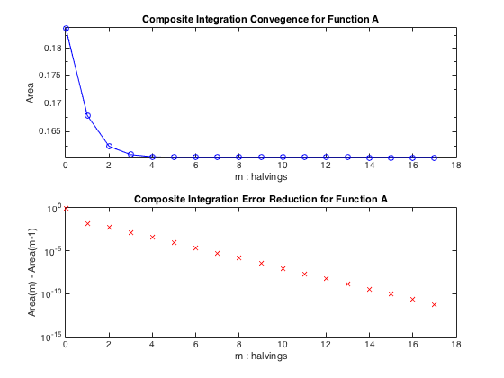
Use Romberg Rule to Reduce Order of Error (Function B)
Repeat same process used in Part A
m = 1; % number of panel halvings (# row + 1) j = 1; % number of error reductions (# column + 1) differenceb = zeros(max_size,1); differenceb(1) = 1; % arbitrary, > 0 starting value while (differenceb(m) > error && m < (max_size - 1)) % Fill out rows until tolerance or maximum iterations is reached row = m + 1; % account for 1 indexing in Matlab for k = 1:j % fill out columns in row column = k + 1; % account for 1 indexing ra = romberg_b(row, column-1); rb = romberg_b(row-1, column-1); romberg_b(row,column) = NextRomberg(ra, rb, k); end m = m + 1; % next row j = j + 1; % will need to go one column further differenceb(row) = abs(romberg_b(row,column) - romberg_b(row-1,column-1)); end fprintf('Completed Romberg iteration (Function B)\n'); fprintf('Area = %f\n', romberg_b(row,column)); fprintf('Error Reduction Iterations (n) = %d\n',column-1); fprintf('Function Evaluations = %d\n', 2^(row-1)+1) fprintf('Composite Trapezoidal Integral for this n is: %f\n', romberg_b(row,1));
Completed Romberg iteration (Function B) Area = 0.750000 Error Reduction Iterations (n) = 18 Function Evaluations = 262145 Composite Trapezoidal Integral for this n is: 0.750000
Plot Error Reduction for Part B - Romberg Iteration
figure() semilogy(0:max_size-1,differenceb(1:end),'rx') xlabel('m : Halvings') ylabel('| R_{m,j} - R_{m-1,j-1} |') title('Function B Romberg Error Reduction')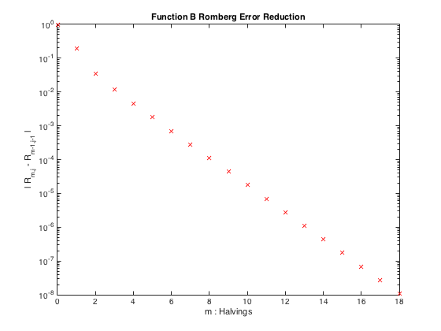
Composite Trapezoidal Rule for Function B
q = 1; % iterator trapezoidal_b(1) = C_Trap(Fb([from to]), to-from); trap_dif_b(q) = 1; % arbitrary starting value m = 0:(2*max_size-1); while trap_dif_b(q) > error q = q + 1; n = 2^m(q); % panels h = (to - from) / n; % panel width x = linspace(to,from, n+1); % points to evaluate at ya = Fb(x); % evaluations trapezoidal_b(q) = C_Trap(ya, h); trap_dif_b(q) = abs(trapezoidal_b(q) - trapezoidal_b(q-1)); end fprintf('\n Function B Composite Integration \n') fprintf('Area: %f\n',trapezoidal_b(q)); fprintf('Halving iterations needed: %d\n',m(q)) % halvings needed fprintf('Panels needed: %d\n',2^m(q)) % total panels needed fprintf('Function evaluations: %d\n',2^m(q) + 1) % total evaluations
Function B Composite Integration Area: 0.750000 Halving iterations needed: 27 Panels needed: 134217728 Function evaluations: 134217729
Plot Composite Error Reductions for Function B
figure(); hold on subplot(2,1,1); semilogy(m,trapezoidal_b,'bo-') xlabel('m : halvings') ylabel('Integral') title('Composite Trapezoidal Convergence for Function B') subplot(2,1,2); semilogy(m,trap_dif_b,'rx') xlabel('m : halvings') ylabel('Area(m) - Area(m-1)') title('Composite Integration Error Reduction for Function B') hold off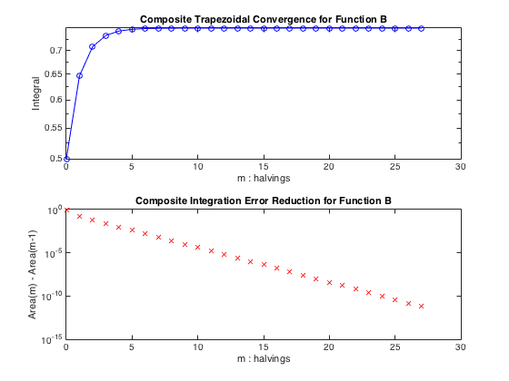